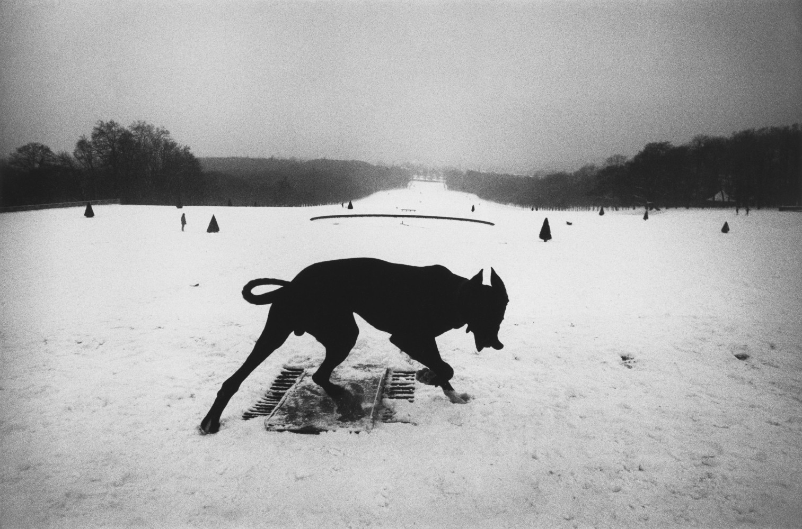
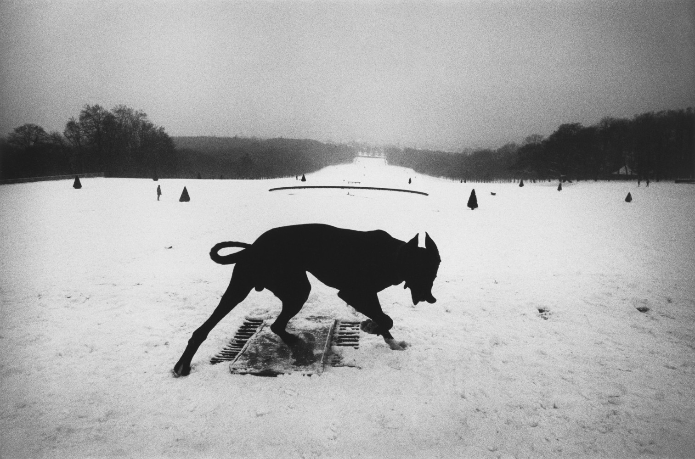
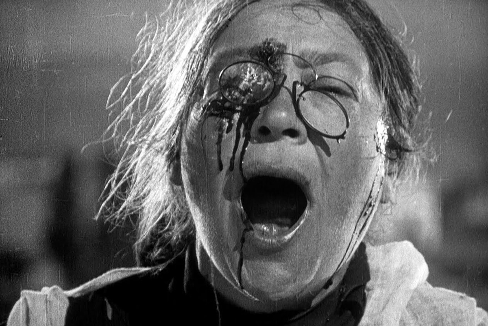

Ben's notes
LAST UPDATE: JANUARY 2023
6 January 2023
Mass IIII (2011), Amenra. Link here.

3 January 2023
The House Is Black (1963), Forugh Farrokhzad. Link here.

2 January 2023
Fanny and Alexander (1982), Ingmar Bergman.

30 December 2022
Yi Yi (2000), Edward Yang.

18 December 2022
Le bonheur (1965), Agnès Varda.

11 December 2022
The Seventh Seal (1957), Ingmar Bergman.

10 December 2022
Viridiana (1961), Luis Buñuel.


A Virgin Spring (1960), Ingmar Bergman.


4 December 2022
A Brighter Summer Day (1991), Edward Yang.

Short documentary on Yuri Nornstein (2004). Link here.

3 December 2022
Raging Bull (1980), Martin Scorsese.

2 December 2022
Beau Travail (1999), Claire Denis.

28 November 2022
Tree of Wooden Clogs (1978), Ermanno Olmi.

20 November 2022
Bartleby, the Scrivener (1853), Herman Melville. Painting by Pablo Picasso: Breakfast of a Blind Man (1903).

Europe '51 (1952), Roberto Rossellini.

19 November 2022
Apur Sansar (1959), Satyajit Ray. Link here.

13 November 2022
Aparajito (1956), Satyajit Ray. Link here.

11 November 2022
Pather Panchali (1955), Satyajit Ray. Link here.

6 November 2022
Jeanne Dielman, 23, quai du Commerce, 1080 Bruxelles (1975), Chantal Akerman.

5 November 2022
Far From Vietnam (1967), Joris Ivens, William Klein, Claude Lelouch, Agnès Varda, Jean-Luc Godard, Chris Marker and Alain Resnais.

Josef Koudelka exibition at Photo Elysée museum, Lausanne (2022).

 

23 Octobre 2022
Ulysse (1983), Agnès Varda.

22 Octobre 2022
Youtube proposed me to rewatch Dominique Mercy's solo in Vollomond, by Pina Bausch. Link here.

It reminded me of Olivier de Sagazan, and I could not but watch a couple of his interviews and performances – for the tenth time, propably.

In turn, I naturally went back to the work of Michel Nedjar (I always go back to the work of Michel Nedjar).

Les statues meurent aussi (1953), Chris Marker.

Les hommes de la baleine (1956), Mario Ruspoli.

20 Octobre 2022
L'Eclisse (1962), Michelangelo Antonioni.

16 Octobre 2022
Description d'un combat (1960), Chris Marker.


Rosa Rosae. A Spanish Civil War Elegy (2021), Carlos Saura.
14 Octobre 2022
Journal d'un curé de campagne (1951), Robert Bresson.


8 Octobre 2022
Le feu follet (1963), Louis Malle.

3 Octobre 2022
Au revoir les enfants (1987), Louis Malle.

2 Octobre 2022
Daguerréotypes (1975), Agnès Varda.


The Adventures of Prince Achmed (1926), Lotte Reiniger. Link here.

Un chien Andalou (1929), Luis Buñuel.

Le voyage dans la lune (1902), Georges Méliès.

Battleship Potemkin (1925), Sergei Eisenstein.
1 October 2022
Bergman Island (2021), Mia Hansen-Løve.

The Amorous Indies (2018), Clément Cogitore.

26 September 2022
L'Histoire de l'oeil (1928), Georges Bataille.

24 September 2022
2666 (2004), Roberto Bolaño. Painting by Carlos Mérida: Fiesta de pájaros (1959).
15 September 2022
Man With a Movie Camera (1929), Dziga Vertov.


9 September 2022
The Exterminating Angel (1962), Luis Buñuel.

30 August 2022
Oslo, August 31st (2011), Joachim Trier.

29 August 2022
Reprise (2006), Joachim Trier.
28 August 2022
My Dinner With André (1981), Louis Malle.

21 August 2022
News from Home (1977), Chantal Akerman. Link here.

I rewatched two of Yuri Nornstein's animated films: Tale of Tales (1979). Link here.

And Hedgehog in the Fog (1975). Link here.

Discussion between Mohamed Mbougar Sarr, Pierre Ducrozet et Jakuta Alikavazovic around Los detectives salvajes (1998) from Roberto Bolaño, on France Culture.

20 August 2022
Cycling the Frame (1988), Cynthia Beatt and Tilda Swinton.

19 August 2022
Visages d'enfants (1925), Jacques Feyder.

16 August 2022
Cries and Whispers (1972), Ingmar Bergman.

15 August 2022
2666, from Roberto Bolaño (2004):
"Il choisissait La Métamorphose plutôt que Le Procès, il choisissait Bartleby plutôt que Moby Dick, Un cœur simple plutôt que Bouvard et Pécuchet et Un conte de Noël plutôt que Conte de deux villes ou Les papiers posthumes du Pickwick Club. Même les pharmaciens cultivés ne se risquent plus aux grandes œuvres, imparfaites, torrentielles, celles qui ouvrent des chemins dans l'inconnu. Ils choisissent les exercices parfaits des grands maîtres. Ou ce qui revient au même : ils veulent voir les grands maîtres dans des séances d'escrime d'entraînement, mais ne veulent rien savoir des vrais combats, où les grands maîtres luttent contre ça, ce ça qui nous terrifie tous, ce ça qui effraie et charge cornes baissées, et il y a du sang et des blessures mortelles et de la puanteur."
"He chose The Metamorphosis over The Trial, he chose Bartleby over Moby-Dick, he chose A Simple Heart over Bouvard and Pecuchet, and A Christmas Carol over A Tale of Two Cities or The Pickwick Papers. What a sad paradox, thought Amalfitano. Now even bookish pharmacists are afraid to take on the great, imperfect, torrential works, books that blaze paths into the unknown. They choose the perfect exercises of the great masters. Or what amounts to the same thing: they want to watch the great masters spar, but they have no interest in real combat, when the great masters struggle against that something, that something that terrifies us all, that something that cows us and spurs us on, amid blood and mortal wounds and stench."
"Escogía La metamorfosis en lugar de El proceso, escogía Bartleby en lugar de Moby Dick, escogía Un corazón simple en lugar de Bouvard y Pécuchet, y Un cuento de navidad en lugar de Historia de dos ciudades o de El Club Pickwick. Qué triste paradoja, pensó Amalfitano. Ya ni los farmacéuticos ilustrados se atreven con las grandes obras, imperfectas, torrenciales, las que abren camino en lo desconocido. Escogen los ejercicios perfectos de los grandes maestros. O lo que es lo mismo: quieren ver a los grandes maestros en sesiones de esgrima de entrenamiento, pero no quieren saber nada de los combates de verdad, en donde los grandes maestros luchan contra aquello, ese aquello que nos atemoriza a todos, ese aquello que acoquina y encacha, y hay sangre y heridas mortales y fetidez."
14 August 2022
The Color of Pomegranates (1969), Sergei Parajanov.